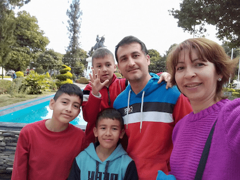

Pablo Dario Perez | WDD 130
Hi everyone! My name is Pablo and I'm from Salta Argentina. I'm married to Soledad and we have three children, Jaasiel the older one, Elias the middle, and Aarón the younger one. I have been a member for 22 years. I was baptized when I was 23 years old and after that, I served a mission in Provo Utah between 2005 and 2007. Actually, I am working as a stake president on the Salta Oeste Stake. We have a lot of work to do but the blessings are a lot too. About my job, I am the clerical leader in the Salta temple but I love programming, so that is one reason why I am studying at BYUI.